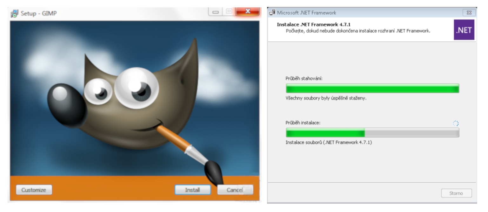

INSTALACE PROGRAMU
Program, který si koupíme, dostaneme na CD/DVD disku, nebo si ho stáhneme z Internetu. Po vložení instalačního CD/DVD disku se většinou okamžitě spustí instalační program (díky souboru autorun.inf), v případě softwaru staženého z Internetu musíme instalační program spustit sami (ve Windows nejčastěji poklepáním na soubory install.exe či setup.exe). Průvodce instalací (wizzard) si často vyžádá sériové číslo a souhlas s licenčními podmínkami, zeptá se, kam (do jaké složky na disku) se má program uložit a kam se má umístit zástupce programu, případně žádá další informace. Potom instalační program nahraje všechny soubory, ze kterých se program skládá, na pevný disk počítače, provede nutnou konfiguraci (v systémovém registru Windows, konfiguračních souborech) a nakonec vytvoří zástupce programu pro jeho snadné spuštění. K instalaci většiny programů je nutné mít práva správce.

Ukázka instalace
ODINSTALACE PROGRAMU
Úplné odebrání programu bývá paradoxně často složitější, zvláště v systémech Windows. Při instalaci si program nahraje své komponenty do mnoha složek včetně systémových, sdílí některé soubory s jinými programy (dynamické knihovny DLL), vytvoří záznamy v tzv. registru, při svém běhu vytváří pomocné soubory. Program, zajišťující odinstalování aplikace, často neví přesně, kde všude jsou programové soubory uložené a všechny je nesmaže. V řadě případů tak dochází k hromadění zbytečných a nepoužívaných souborů. Pro jejich odstranění lze používat některé speciální utility – např. RegCleaner (program pro čištění registrů). Při podobných operacích je však nutné postupovat velmi obezřetně, aby nedošlo k odstranění některé důležité součásti systému nebo používaného programu! V linuxových systémech je lépe vyřešeno oddělení systémových a uživatelských souborů, úplné odstranění nepotřebného programu je proto pravděpodobnější.
LOKALIZACE
Lokalizace je překlad programu, v našem případě do češtiny. Většina významných softwarových firem pochází z anglicky mluvících zemí a originály programů tedy existují v angličtině. Dnes je však zcela běžné, že tyto firmy mají místní zastoupení, která zajišťují prodej programů, ale také je před prodejem lokalizují - převedou do češtiny. Lokalizace je drahá a časově náročná činnost, protože se musí přeložit nejen volby nabídek a obsah dialogových oken, ale také nápověda k programu a návod k programu (manuál), případně vytvořit dělicí slovník pro české dělení slov a český korektor pravopisu.
PLATFORMA A KOMPATIBILITA
V souvislosti s určitým typem OS i typem procesoru používáme pojem platforma - např. Windows, Linux, OS X. Používaný program musí být určen pro operační systém, který je na počítači nainstalován; pod jiným systémem většinou nepracuje (např. program určený pro MS Windows nebude pracovat pod Linuxem a naopak). Mnoho programů, zvláště z oblasti svobodného software (free software), má proto verze určené pro několik operačních systémů – jsou multiplatformní. Problémy se spuštěním programu však mohou nastat i na jedné platformě v souvislosti s různými verzemi OS i rozdíly mezi 32bitovými a 64bitovými systémy (například nový program určený pro MS Windows může spolehlivě fungovat v novějších verzích Windows, ale nemusí pracovat pod starší verzí stejného OS). Při pořizování programu si proto vždy musíme ověřit, zda je kompatibilní (ve funkční shodě) s námi používaným operačním systémem. V nových systémech Windows je v případě problémů možné využít nastavení na kartě Kompatibilita, která je součástí panelu Vlastnosti pro zástupce dané aplikace.
VERZE PROGRAMU
U počítačových programů je důležitá jeho verze, která se označuje číslem za názvem programu. Nový program může být například označen jako verze 1.0. Některé dodatečně zjištěné dílčí nedostatky nebo bezpečnostní problémy řeší aktualizace programu (dnes nejčastěji přes Internet), update. Aktualizace jsou zakázníkům, kteří si zakoupili určitou verzi programu, obvykle poskytovány bezplatně. Pro přehlednost jsou označovány buď datem vydání, nebo symbolickým číselným vyjádřením podverze – např. 1.1 nebo 1.23 apod. Povýšení na novou verzi (např. 2.0), upgrade, přináší významnější změny ve vývoji programu a v případě komerčního software je třeba vyšší verzi znovu zaplatit. Bývá pravidlem, že nové verze mají nové funkce a lepší ovládání, ale také vyšší nároky na výkon počítače. Před provedením upgrade je tedy nutné zjistit doporučenou (případně minimální) konfiguraci počítače, aby bylo možné program na daném počítači možné vůbec používat. Opačný postup, tedy použití nižší verze programu (např. kvůli nekompatibilitě s instalovaných OS nebo nedostatečnou konfigurací počítače), se nazývá downgrade.
REGISTRACE PROGRAMU
je zaevidování jeho uživatele do databáze výrobce programu. Registrace je nepovinná a přináší většinou několik výhod:
• nárok na upgrade programu za sníženou cenu; uživatel se často včas dozví o časově omezených nabídkách výhodného nákupu upgradu nebo dalších programů od stejné firmy;
• někteří výrobci programů posílají svým registrovaným uživatelům materiály (časopisy, prospekty), kde se dozvíte zkušenosti jiných uživatelů s programem, bývají zde informace o nových verzích programu, případně o vzniklých doplňcích daného programu;
• u některých programů po registraci vzniká nárok na využití zákaznické linky v případě potíží s programem.